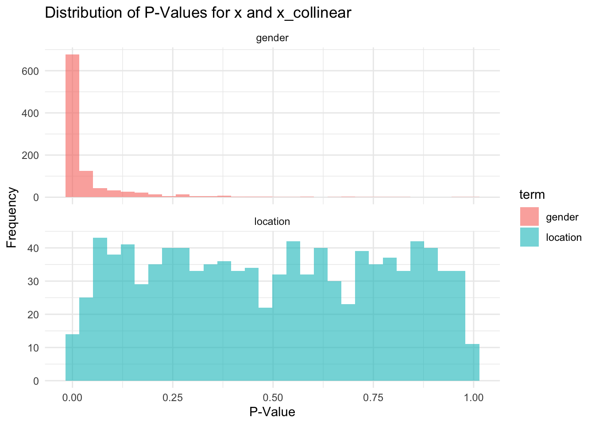
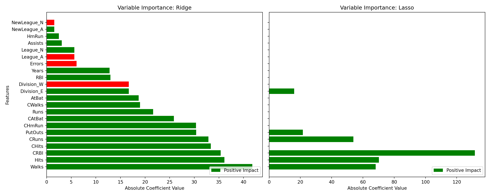
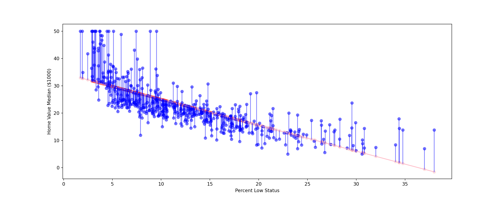
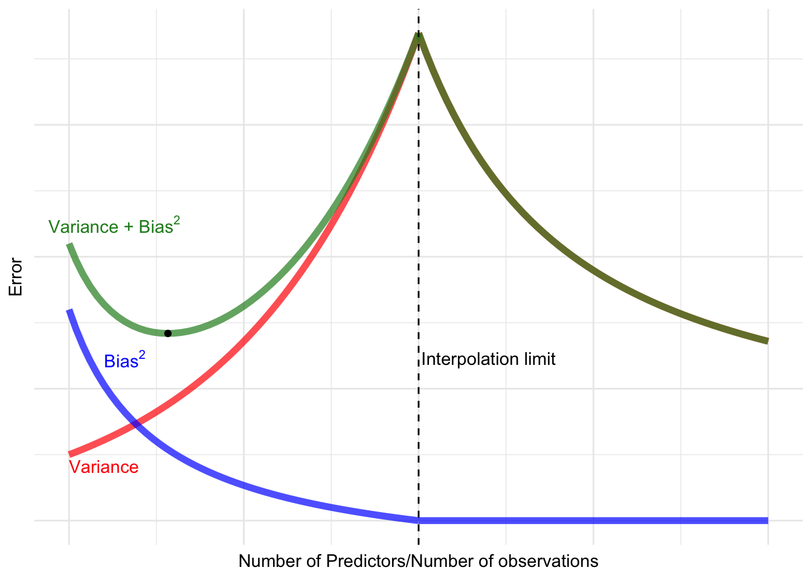

Since the bulk of your work will be building machnine learning models it is probably going to be important that you get way more comfortable with machine learning in python. You are a bit of a unicorn in the sense that you will do anything but learn pandas. So you are going to have to make sure that this isn’t new information.
Code
import polars as pl import numpy as npimport pandas as pd import statsmodels.formula.api as smf import statsmodels.api as smimport matplotlib.pyplot as pltfrom statsmodels.stats.outliers_influence import variance_inflation_factor as VIFfrom statsmodels.stats.anova import anova_lmfrom sklearn.linear_model import ElasticNet, ElasticNetCVfrom sklearn.model_selection import GridSearchCV, train_test_split, ShuffleSplit, KFoldfrom sklearn.preprocessing import StandardScalerfrom sklearn.pipeline import Pipeline, make_pipelinefrom sklearn.metrics import mean_squared_error, make_scorerimport polars.selectors as csfrom marginaleffects import*from plotnine import*from great_tables import GT boston = pl.read_csv('data/Boston.csv').to_pandas()
Since R is kind of your native language the way Python does things is weird to you so a simple linear model like this
boston =read.csv('data/Boston.csv')mod =lm(medv ~ lstat, data = boston)
becomes this (monster) in python where you now also have to tell it that you need the constant. Which is frankly crazy.
Notes: [1] Standard Errors assume that the covariance matrix of the errors is correctly specified.
# sm_model.summary()
Like an intersting cultural difference between these two is how we do things after estimation. For R apply functions to it since R is a more functionally oriented language. However if we access the object we created we have a whole host of class methods for this task. So if we wanted to predict what would happen at specified values we would do something to the effect of
new_df = pd.DataFrame({'lstat':[5, 10, 15]})x_new = sm.add_constant(new_df)preds = sm_model.get_prediction(x_new)## this prints a huge arraypreds_mean = preds.predicted_mean
Multiple regression works somewhat similarly. Unfortunately it takes this hideous form
y = boston['medv']x = boston[['crim', 'age']]x = sm.add_constant(x)sm.OLS(y, x).fit().summary()
OLS Regression Results
Dep. Variable:
medv
R-squared:
0.217
Model:
OLS
Adj. R-squared:
0.213
Method:
Least Squares
F-statistic:
69.52
Date:
Wed, 26 Feb 2025
Prob (F-statistic):
2.20e-27
Time:
16:23:16
Log-Likelihood:
-1778.5
No. Observations:
506
AIC:
3563.
Df Residuals:
503
BIC:
3576.
Df Model:
2
Covariance Type:
nonrobust
coef
std err
t
P>|t|
[0.025
0.975]
const
29.8007
0.971
30.698
0.000
27.893
31.708
crim
-0.3118
0.045
-6.914
0.000
-0.400
-0.223
age
-0.0896
0.014
-6.499
0.000
-0.117
-0.062
Omnibus:
189.020
Durbin-Watson:
0.710
Prob(Omnibus):
0.000
Jarque-Bera (JB):
553.472
Skew:
1.831
Prob(JB):
6.53e-121
Kurtosis:
6.583
Cond. No.
199.
Notes: [1] Standard Errors assume that the covariance matrix of the errors is correctly specified.
# smf.ols('medv ~ crim + age', data = boston).fit().summary()
summary(lm(medv ~ crim + age, data = boston))
Call:
lm(formula = medv ~ crim + age, data = boston)
Residuals:
Min 1Q Median 3Q Max
-13.940 -4.991 -2.420 2.110 32.033
Coefficients:
Estimate Std. Error t value Pr(>|t|)
(Intercept) 29.80067 0.97078 30.698 < 2e-16 ***
crim -0.31182 0.04510 -6.914 1.43e-11 ***
age -0.08955 0.01378 -6.499 1.95e-10 ***
---
Signif. codes: 0 '***' 0.001 '**' 0.01 '*' 0.05 '.' 0.1 ' ' 1
Residual standard error: 8.157 on 503 degrees of freedom
Multiple R-squared: 0.2166, Adjusted R-squared: 0.2134
F-statistic: 69.52 on 2 and 503 DF, p-value: < 2.2e-16
What starts to get interesting is that what if we need we want to fit everything in one go? In R this is pretty simple
Whereas in python you need to do something like this
smf.ols('medv ~'+'+'.join(boston.columns.difference(['medv'])), data = boston).fit().summary()
OLS Regression Results
Dep. Variable:
medv
R-squared:
0.734
Model:
OLS
Adj. R-squared:
0.728
Method:
Least Squares
F-statistic:
113.5
Date:
Wed, 26 Feb 2025
Prob (F-statistic):
2.23e-133
Time:
16:23:16
Log-Likelihood:
-1504.9
No. Observations:
506
AIC:
3036.
Df Residuals:
493
BIC:
3091.
Df Model:
12
Covariance Type:
nonrobust
coef
std err
t
P>|t|
[0.025
0.975]
Intercept
41.6173
4.936
8.431
0.000
31.919
51.316
age
0.0036
0.013
0.271
0.787
-0.023
0.030
chas
2.8400
0.870
3.264
0.001
1.131
4.549
crim
-0.1214
0.033
-3.678
0.000
-0.186
-0.057
dis
-1.4908
0.202
-7.394
0.000
-1.887
-1.095
indus
0.0135
0.062
0.217
0.829
-0.109
0.136
lstat
-0.5520
0.051
-10.897
0.000
-0.652
-0.452
nox
-18.7580
3.851
-4.870
0.000
-26.325
-11.191
ptratio
-0.9375
0.132
-7.091
0.000
-1.197
-0.678
rad
0.2894
0.067
4.325
0.000
0.158
0.421
rm
3.6581
0.420
8.705
0.000
2.832
4.484
tax
-0.0127
0.004
-3.337
0.001
-0.020
-0.005
zn
0.0470
0.014
3.384
0.001
0.020
0.074
Omnibus:
171.096
Durbin-Watson:
1.077
Prob(Omnibus):
0.000
Jarque-Bera (JB):
709.937
Skew:
1.477
Prob(JB):
6.90e-155
Kurtosis:
7.995
Cond. No.
1.17e+04
Notes: [1] Standard Errors assume that the covariance matrix of the errors is correctly specified. [2] The condition number is large, 1.17e+04. This might indicate that there are strong multicollinearity or other numerical problems.
or
x = boston.drop(columns=['medv'])x = sm.add_constant(x)y = boston['medv']sm.OLS(y,x).fit().summary()
OLS Regression Results
Dep. Variable:
medv
R-squared:
0.735
Model:
OLS
Adj. R-squared:
0.728
Method:
Least Squares
F-statistic:
105.0
Date:
Wed, 26 Feb 2025
Prob (F-statistic):
1.26e-132
Time:
16:23:16
Log-Likelihood:
-1504.2
No. Observations:
506
AIC:
3036.
Df Residuals:
492
BIC:
3096.
Df Model:
13
Covariance Type:
nonrobust
coef
std err
t
P>|t|
[0.025
0.975]
const
41.6430
4.934
8.439
0.000
31.948
51.338
-0.0024
0.002
-1.154
0.249
-0.007
0.002
crim
-0.1222
0.033
-3.703
0.000
-0.187
-0.057
zn
0.0485
0.014
3.480
0.001
0.021
0.076
indus
0.0128
0.062
0.207
0.836
-0.109
0.135
chas
2.8585
0.870
3.286
0.001
1.149
4.568
nox
-18.5465
3.854
-4.812
0.000
-26.120
-10.973
rm
3.6856
0.421
8.759
0.000
2.859
4.512
age
0.0011
0.014
0.081
0.935
-0.025
0.028
dis
-1.5079
0.202
-7.461
0.000
-1.905
-1.111
rad
0.3075
0.069
4.476
0.000
0.172
0.442
tax
-0.0120
0.004
-3.112
0.002
-0.020
-0.004
ptratio
-0.9329
0.132
-7.055
0.000
-1.193
-0.673
lstat
-0.5535
0.051
-10.926
0.000
-0.653
-0.454
Omnibus:
168.602
Durbin-Watson:
1.082
Prob(Omnibus):
0.000
Jarque-Bera (JB):
688.210
Skew:
1.459
Prob(JB):
3.61e-150
Kurtosis:
7.912
Cond. No.
1.38e+04
Notes: [1] Standard Errors assume that the covariance matrix of the errors is correctly specified. [2] The condition number is large, 1.38e+04. This might indicate that there are strong multicollinearity or other numerical problems.
4.1 Transformations
We can start to do things like add transformations like this
x = boston[['age', 'lstat']]x['lstat:age'] = x['age'] * x['lstat']x = sm.add_constant(x) y = boston['medv']sm.OLS(y, x).fit().summary()
OLS Regression Results
Dep. Variable:
medv
R-squared:
0.556
Model:
OLS
Adj. R-squared:
0.553
Method:
Least Squares
F-statistic:
209.3
Date:
Wed, 26 Feb 2025
Prob (F-statistic):
4.86e-88
Time:
16:23:16
Log-Likelihood:
-1635.0
No. Observations:
506
AIC:
3278.
Df Residuals:
502
BIC:
3295.
Df Model:
3
Covariance Type:
nonrobust
coef
std err
t
P>|t|
[0.025
0.975]
const
36.0885
1.470
24.553
0.000
33.201
38.976
age
-0.0007
0.020
-0.036
0.971
-0.040
0.038
lstat
-1.3921
0.167
-8.313
0.000
-1.721
-1.063
lstat:age
0.0042
0.002
2.244
0.025
0.001
0.008
Omnibus:
135.601
Durbin-Watson:
0.965
Prob(Omnibus):
0.000
Jarque-Bera (JB):
296.955
Skew:
1.417
Prob(JB):
3.29e-65
Kurtosis:
5.461
Cond. No.
6.88e+03
Notes: [1] Standard Errors assume that the covariance matrix of the errors is correctly specified. [2] The condition number is large, 6.88e+03. This might indicate that there are strong multicollinearity or other numerical problems.
For qualitative variables we need to switch to a new dataset. There is a lot of interesting information in multicategory variables. One thing that we have to keep in mind when using qualitative variables normally is that we have a reference category. This may not always be straightforward to infer and we are throwing information away that is interesting. One hot encoding or breaking out the qualitative variable to indicatior variables is a nice way to do this,
Notes: [1] Standard Errors assume that the covariance matrix of the errors is correctly specified. [2] The smallest eigenvalue is 1.38e-29. This might indicate that there are strong multicollinearity problems or that the design matrix is singular.
For quick and dirty things this is nice and fairly straightforward. We are not really going to delve to deep on fitting a ton of models but really this would just involve some F-string. Instead we are going to focus on the machine learning workflow. Going through step by step and doing these are not terribily time consuming but as things get more complicated we are going to need a more robust framework to deal with this.
4.2 Regression Assumptions
Our basic assumptions of linear regression are that
There are linear relationship between our outcome and our predictors
This is something we violate all the time. For the most part we can transform the dependent or independent variable to dependent variable
No Perfect multicolinearity. This is effectively a mathematical constraint. If any of the predictors are an exact linear combination of each other then we can’t actually calculate the model. Software solves this for us and kicks out various terms. It will do this arbitrarily so.
In practice this assumption is never violated but we still need to worry about some collinearity. The general idea is that when we are measuring a concept with variables that are really correlated with each other then we are not going to get a good understanding of what each variable is contributing on their own. This is not a statistical problem it is a research design problem. We can’t systematically account for whether this will
The general idea is that when we are measuring a concept with variables that are really correlated with each other then we are not going to get a good understanding of what each variable is contributing on their own. This is not a statistical problem it is a research design problem. We can’t systematically account for whether this will inflate the standard errors or deflate them. Meaning that if we are interested in variable importance or making statements about what moving one variable up or down will do.
Spepherical Error term aka IID error assumption
For simplicity we can group two related assumptions
In practice when we violate this asumption our coefficients are unaffected but our standard errors can be drastically wrong. We can correct the standard errors to account for violations by loosening up how we compute the variance-covariance matrix. In some ways this is acceptable under very specific settings however. This can generally point to deeper issues with modeling the data. Like one way to trigger heterosckedasicity is simply to model binary data with OLS. A more appropriate solution would just to be model the DGP correctly.
4.3 Shrinkage Estimators
One solution that this flavor of statistics has proposed to reduce the variance of OLS estimates when the number of predictors large or the predictors are really collinear than we can use shirkage aka regularization to penalize regression coefficients towards zero.
Ridge regression and LASSO regression are not entirely different than OLS regression. Each of these estimators reduces the residual sum of squares however we tack on a penalty term to the lasso and ridge estimators.
Ridge penalty we are summing the squared coefficients and multiplying it by the hyperparameter.
Effectively imposing a penalty equivelent to the square of the magnitude of the coefficients
LASSO penalty we are just summing the absolute values of the coefficients.
Effectively imposing a penalty equivelent to the absolute value of the magnitude of coefficients
The reason why we want to penalize a model is that as we start training and start adding in variables we think help predict our outcome our models are going to start to do a better job fitting the noise. Each approach has pros and cons. A ridge penalty will let all predictors enter into the predictions even if they don’t contribute much. A lasso penalty will implictly start to kick out variables that don’t contribute anything to the model. Theoretically this is important if we have a high amount of multicollinearity/we don’t wanted automated feature selection. Effectively this question is a little theoretical in practice we are going to compare the predicitve accuracy of the two to find this out. The ridge and lasso penalties will appear in other cases so I will probably go over this again.
4.4 What is multicollinearity and how do we fix it?
To set up this question lets think of a hypothetical business problem. We are trying to assign somebody a premium based on the data we have on other people. We have access to their age, their location, past driving history, make and model of their car, and gender. Theoretically we would expect these variables to be related to one another in some way. For example make and model of their car, age, and gender is probably going to tell us something about their past driving history. We would expect that a 20 year old male driving a sports car is probably going to have a higher likelihood of having one or more speeding tickets then a female driving the same car. When we go to model this relationship each of these variables are going to be related to each other.
Lets setup an OLS with this example where age enters into the model in years, car type is a factor with a Toyota Corolla as it reference level, past incidents is the log of past driving behavior, location is a simple indicator variable where rural is the reference level, and gender is a indicator variable where the reference level is female.
For simplicity we will focus on gender as the primary explainer for insurance premiums. Lets say that gender and location are highly correlated this may occur for a variety of reasons e.g. presence of a military base, presence of a college campus etc. When we go to interpret the effect of being male on an insurance premium we hold all variables in the equation constant. However, if the moving from a rural area to the city is highly deterministic of gender we can neatly unpack the effect of gender on insurance premium. While an interpretational problem this makes it difficult to unpack the effect of a single variable on insurance premiums.
Another important factor is multicollinearity impacts our uncertainty estimates either biasing them down leading us to fail to reject the null more times than we should or can bias our standard errors downwards over rejecting the null hypothesis (Gujarati, Porter, and Gunasekar 2012; Lenz and Sahn 2021). Lets take a simulated example to make this point a bit more explicit
library(performance)library(magrittr)library(tidyverse)generate_dummy_data <-function(data, seed =NULL) {set.seed(seed = seed) data <- dplyr::tibble(gender =rbinom(100, 1, 0.5),location =ifelse(runif(100) <0.9, gender, 1- gender),y =5+3* gender +rnorm(100, 0, 3))return(data)}generate_dummy_model <-function(data) { model <-lm(y ~ gender + location, data = data)return(model)}extract_model_coefficients <-function(model) { coefs <- broom::tidy(model) |> janitor::clean_names()# replace dots and white spaces with underscoresreturn(coefs)}run_lm_simulation <-function(data_generator, model_generator, n =1000) { simulation <- dplyr::tibble(i =1:n) %>% dplyr::mutate(data = purrr::map(.x = i, .f =~data_generator(seed = .x)),model = purrr::map(.x = data, .f = model_generator),coefs = purrr::map(.x = model, .f = extract_model_coefficients) ) %>%return(simulation)}dummy_simulation <-run_lm_simulation(data_generator = generate_dummy_data,model_generator = generate_dummy_model, n =1000)simulated_p = dummy_simulation |>unnest(coefs) |>filter(term !='(Intercept)')ggplot(simulated_p, aes(x = p_value, fill = term)) +geom_histogram(bins =30, alpha =0.6, position ="identity") +facet_wrap(vars(term), scales ="free_y", ncol =1) +labs(title ="Distribution of P-Values for x and x_collinear",x ="P-Value",y ="Frequency") +theme_minimal()

In this case we see that we have some encouraging results that we are not going to over reject gender but if we look at location we are much more prone to failing to reject the null hypothesis. This is fine in a simulated world because we induced this relationship ourselves. However, in the real world that is not available to us.
To get around multicollinearity we use methods that penalize our coeficients towards zero. The two most common forms of penalization are known as ridge and LASSO regression. The canonical regression equation minimizes the sum of squared residuals. Regularization adds a penalty term to this equation that shrinks the coefficient estimates toward zero. Ridge regression (L2 penalty) adds the sum of the squared coefficients to the loss function, which discourages large coefficient values but does not set them to zero. LASSO regression (L1 penalty) adds the sum of the absolute values of the coefficients, which can shrink some coefficients to exactly zero, effectively performing feature selection.
As we can see with the ridge penalty as we increase the size of the penalty the closer to zero these coefficients get. For some coefficients they get pushed towards zero immediately. One of the things that happens with multicollinear data is that jumps in one variable can cause massive swings in another in ways that aren’t entirely transparent. In prediction context we may not neccessarily care about the individual impact of one of 100 variables. We are more concerned that our model is healthy and making good predictions on data that it hasn’t seen. By regularizing our model we penalize the model for being extremely flexible this may increase our bias a bit but this comes at the gain of reducing the variance. What this means is that we are going to get a healthier prediction machine. For a LASSO model some of these coefficients will be zero just by the nature of the penalty. Effectively performing feature selection for us.
4.5 Training these things
One important thing to note is that neither when we change the scale of our predictor variable the LASSO and Ridge esstimates will not adjust accordingly because the larger coefficients that result from say salary and age are going to be on different scales which our coefficients are going to respond to accrodingly. However, the penalty term is not going react well at all since it will penalize larger coefficients by default. To build on our prior knowledge lets build a scikit learn pipeline that validates
In a Jupyter environment, please rerun this cell to show the HTML representation or trust the notebook. On GitHub, the HTML representation is unable to render, please try loading this page with nbviewer.org.
In a Jupyter environment, please rerun this cell to show the HTML representation or trust the notebook. On GitHub, the HTML representation is unable to render, please try loading this page with nbviewer.org.
In a Jupyter environment, please rerun this cell to show the HTML representation or trust the notebook. On GitHub, the HTML representation is unable to render, please try loading this page with nbviewer.org.
In a Jupyter environment, please rerun this cell to show the HTML representation or trust the notebook. On GitHub, the HTML representation is unable to render, please try loading this page with nbviewer.org.
We could do the same thing with a lasso regression but this workflow is not great instead we can make a function and then loop over the grids.
models = {'ridge': ElasticNet(l1_ratio=0),'lasso': ElasticNet(l1_ratio=1) # Lasso is a special case of ElasticNet}# Prepare for GridSearchCVparam_grids = {'ridge': {'elasticnet__alpha': lambdas}, # Use 'elasticnet' as the step name'lasso': {'elasticnet__alpha': lambdas}}results = []# Set up ShuffleSplit cross-validation for GridSearchCVvalidation = ShuffleSplit(n_splits=1, test_size=0.5, random_state=0)# Function to perform grid search and output resultsdef tune_model(model_name, model, param_grid):# Build pipeline pipe = Pipeline(steps=[('scaler', scaler), ('elasticnet', model)]) # Step name matches model_name# Perform grid search grid = GridSearchCV(pipe, param_grid, cv=validation, scoring='neg_mean_squared_error') grid.fit(x_train, y_train)# Extract best parameters and model best_alpha = grid.best_params_['elasticnet__alpha'] best_model = grid.best_estimator_ results.append({'model': model_name.capitalize(), # Store as "Ridge" or "Lasso"'best_alpha': best_alpha,'best_model': str(best_model),'best_score': grid.best_score_ })return best_modelbest_models = {}# Tune each modelfor model_name, model in models.items(): best_models[model_name] = tune_model(model_name, model, param_grids[model_name])results_df = pl.DataFrame(results)
So now we have the best model but we would like to grab the most important features. We may need something to present to stakeholders or to better understand what is going on in our models.
def get_variable_importance(best_model, feature_names):# Access the 'elasticnet' step in the pipeline elastic_net_step = best_model.named_steps['elasticnet'] coef = elastic_net_step.coef_ feature_importance =sorted(zip(feature_names, coef), key=lambda x: abs(x[1]), reverse=True) features, coefficients =zip(*feature_importance)return features, coefficients# Prepare side-by-side plotsfig, axes = plt.subplots(1, len(best_models), figsize=(15, 6), sharey=True)# Get feature namesfeature_names = x.columns# Plot VIP for each modelfor i, (model_name, best_model) inenumerate(best_models.items()):# Extract variable importance features, coefficients = get_variable_importance(best_model, feature_names)# Determine bar colors based on coefficient sign colors = ['green'if coef >0else'red'for coef in coefficients]# Create subplot axes[i].barh(features, np.abs(coefficients), color=colors) axes[i].set_title(f'Variable Importance: {model_name.capitalize()}') axes[i].set_xlabel('Absolute Coefficient Value')if i ==0: # Add y-axis label only for the first plot axes[i].set_ylabel('Features') axes[i].invert_yaxis() # Invert y-axis for descending order# Add a legend axes[i].legend(['Positive Impact', 'Negative Impact'], loc='lower right')# Adjust layoutplt.tight_layout()plt.show()

Which is nice we see what is postively impacting value. However, I don’t neccessarily like these plots since we are not really showing anything interesting. A better way would be to show marginal effects. In R we would do something to this effect.
In machine learning parlance we could make a partial dependency plot. Which is really just plotting the predictions when we move values of our variables that we may think are interesting.
4.6 Evaluation Metrics
We have more than a few evaluation metrics for linear regression or regression based tasks to be specific so it is worth going over the most popular ones. In at ?tbl-ols-mets I outline the basics of each measure but will discuss each of these measures in greater detail.
Code
ols_mets = pl.DataFrame({'Metric': ['R-Squared','Mean Square Error (MSE)','Root Mean Square Error (RMSE)','Mean Absolute Error (MAE)','Mean Absolute Percentage Error (MAPE)','Symmetric Mean Absolute Percentage Error (SMAPE)' ],'What it Does': ['The proportion of variation explained by the model','The average error of the model','The square root of the average error of the model','Similar to the MSE but we calculate with |y - yhat|','Similar to the MSE but calculated by |y - yhat| / yi','Similar to the MSE but calculated by |y - yhat| / ((y + yhat) / 2)' ]})GT(ols_mets)
Metric
What it Does
R-Squared
The proportion of variation explained by the model
Mean Square Error (MSE)
The average error of the model
Root Mean Square Error (RMSE)
The square root of the average error of the model
Mean Absolute Error (MAE)
Similar to the MSE but we calculate with |y - yhat|
Mean Absolute Percentage Error (MAPE)
Similar to the MSE but calculated by |y - yhat| / yi
Symmetric Mean Absolute Percentage Error (SMAPE)
Similar to the MSE but calculated by |y - yhat| / ((y + yhat) / 2)
Before we dive into each of these metrics it is worth going over the OLS optimization problem. For an OLS the optimization problem is the sum of the squared residuals. The objective function is given by
For notational purposes \(\beta\) is a vector of regression coefficients, \(y_{i}\) is the observed value of our dependent variable and \(\hat{y}\) is the predicted value from our model. It is a little bit clearer if we rewrite the optimization problem with
Of the optimatization problems in the world this one is kind of beautifully simple. So linear regression is going to draw a line (or hyperplane) through our data that tries to minimize the distance between each of the points. We are going to see how far away the predicted value is from the observed value and then we are going to square them to ensure they aren’t negative then we are going to sum them to get the total distance for each point. In effect what is going on is something to this
fitted = form_model.fittedvaluesresids = form_model.residboston['fitted'] = fittedm,b = np.polyfit(boston['lstat'], boston['medv'], 1)fig,ax = plt.subplots(figsize=(15,6))plt.plot(boston['lstat'], boston['lstat'] * m + b, color ='pink')plt.scatter(boston['lstat'], fitted, color ='red',alpha =0.1)plt.scatter(boston['lstat'], boston['medv'], color ='blue', alpha =0.5)for i inrange(len(boston)): plt.plot([boston['lstat'].iloc[i], boston['lstat'].iloc[i]], [boston['medv'].iloc[i], boston['fitted'].iloc[i]], color='blue', alpha=0.5)plt.xlabel('Percent Low Status')plt.ylabel('Home Value Median ($1000)')

Effectively we are minimizing the distance between the points and our line via this objective function. These metrics are all broadly related to this same idea.
4.6.1 R-Squared
\(R^2\) aka the ‘coefficient of determination’ is some what straight forward it is \(1-\frac{RSS}{TSS}\). Lets break this down a little further
So if we look closely at the fraction is the numerator is the sum of the squared residuals or the distance metric we talked about earlier. In the denominator we have the something broadly similar. The total sum of squares is something akin to a more naive predicition error. Instead of \(\hat{y}\) we have \(\bar{y}\) which is just the mean of y. So we are effectively taking the summed distance of the observed value of y and the mean of y. What this gives us is the fraction of the variance explained by our model. In political science and the social sciences more generally this is something that most people don’t even report anymore. In many cases we are creating regression tables where we have different dependent variables. One of the primary weaknesses of using \(R^{2}\) is that the easiest way to improve your \(R^2\) is to simply add more variables. As the model gets more information it is is going to a better job of getting \(\hat{y}\) close to the observed value of Y.
As a political scientist by training I am always skeptical of the idea of using \(R^2\) for anything other than chuckling at people who see it as some sort of measure of distance from the true model. I think King (1986) sums some of the criticisms quite well. Decisions about how we process our data are also going to influence this metric because we are going to either increase or decrease the distance. \(R^2\) in a machine learning context may fit the description of a goodness of fit test where we are figuring out the amount of variation in the data explained. We are often swapping out variables on the right hand side. \(R^2\) we can assess if some combination of these variables reduce the amount of unexplained variation. Generally we would probably want to use the penalized version of \(R^2\) so we don’t reward our model for just adding more variables. However, I think one of the most interesting points about \(R^2\) are things that are already present in our OLS model. This is going to hold less and less as our model gets less interpretable.
4.6.2 Mean Squared Error and its flavors
Heuristically it seems a lot of machine learning evaluation for regression models uses mean squared error or some variation of it to check model performance. Conceptually these metrics are linked because we can get the \(R^2\) by doing:
However, the thing with \(R^2\) is that it is not neccessarily that sensistive to extreme values. While in general it is difficult to have wildly divergent measure of \(R^2\) and MSE we may actually care about how our models perform in response to outliers. If big errors are costly to our model performance than we are going to want a measure that more directly captures their influence.
Where we are effectively getting the average error instead of the total error. One thing that flips with respect to \(R^2\) is that we are getting a slightly more interpretable difference metric. Meaning that we are getting the average distance between our predicted values and the observed values. So we are looking for this number to be kind of low! However, whats important to note is that there is no scaling factor. Meaning that outliers are going to really effect this metric because we are taking the difference and then going to square it. Lets imagine a situation where I am trying to increase the distance between a friend and the ball. If I stand right next to them and throw a ball it will land closer to them then if I started from farther away and threw the ball. Since we go through this squaring process what ends up happening is that we don’t have a great mental model of how to interpret this distance. What is the squared deviation of the median home value? Kind of not that intuitive because that distance is harder to put into words. To get it back on the original scale we can use the Root mean squared error which is just
\[
RMSE = \sqrt{MSE}
\]
This puts the MSE back on its original scale. If our model is predicting median home prices and the RMSE is 1000, this means that a typical prediction error is around 1000 dollars, with larger errors being weighted more heavily than smaller ones.
4.7 Bias Variance Tradeoff
In the prior, our model could be good at predicting the data we have. However, when we introduce new data, it might struggle to generalize and predict new observations accurately. This challenge arises from overfitting, where the model is really good at describing the dataset it has already seen. To mitigate this we split our data into training sets, test sets, and validation sets effectively hiding parts of our data from our model. It never has access to every single part of the data. By reducing the amount of data the model sees it can’t learn every single strange data point in the model.
The reason we do this is because we want our model to predict new data but also do a good job of approximating the data generating process. These two goals are inherently conflictual. Bias represents how far away we are from the target while variance represents how far away our guesses are from each other. If we build a model that is good at predicting every single quirk of the dataset, aka reducing variance, then when we introduce new data to the model it is going to be very very brittle. If we reduce the complexity of the model making it more flexible, aka reducing bias, then we risk not being able to catch the patterns in our data.
In the bias-variance tradeoff, we aim to find a balance: a model that is simple enough to generalize well to new data but complex enough to capture the important patterns. Techniques like cross-validation, regularization, and hyperparameter tuning help us navigate this tradeoff and improve the model’s predictive performance.
Mathematically we can think of the bias-variance tradeoff along the lines of mean squared error where
\[
Error = Bias^2 + Variance + Noise
\]
Where we have the how far away the predictions are from the real values, how far away the predictions are from each other, and the randomness from the data generating process. We can’t really doing anything about the randomness from the DGP. A useful heuristic is that we can reduce how far away our predictions are from our real values by introducing more complexity to the model. This may mean more complex functional forms of variables, introduce interactions, or use more flexible models. We can increase variance by using simple models, use bagging or boosting to leverage “bad learners”, or use regularization to penalize our models.
4.7.1 Double Descent
Code
# code taken from https://www.r-bloggers.com/2021/07/double-descent-part-i-sample-wise-non-monotonicity/f <-function(x){ (-0.4+1/(x+0.5)) + (0.5*exp(x))}#The point where the prediction error is minimizedoptimum <-optimize(f, interval=c(0, 1), maximum=FALSE, tol =1e-8)temp_data <-data.frame(x = optimum$minimum, y=optimum$objective)f1 <-function(x){ifelse(x<=2, (-0.4+1/(x+0.5)) + (0.5*exp(x)), NA)}f2 <-function(x){ifelse(x>=2, (0+1/(1/(0.5*exp(4/x)))), NA)}#Prediction variance function (it is piecewise so creating two of them).var_f1 <-function(x){ifelse(x<=2, (0.5*exp(x)), NA)}var_f2 <-function(x){ifelse(x>=2, 1/(1/(0.5*exp(4/x))), NA)}#Prediction bias function (it is piecewise so creating two of them).bias_f1 <-function(x){ifelse(x<=2,-0.4+1/(x+0.5),NA )}bias_f2 <-function(x){ifelse(x>=2,0,NA )}ggplot(data = temp_data, aes(x=x, y=y)) +xlim(0,4) +geom_function(fun = var_f1, color ="red", size =2, alpha =0.7) +geom_function(fun = var_f2, color ="red", size =2, alpha =0.7) +geom_function(fun = bias_f1, color ="blue", size =2, alpha =0.7) +geom_function(fun = bias_f2, color ="blue", size =2, alpha =0.7) +geom_function(fun = f1, color ="forestgreen", size =2, alpha =0.7) +geom_function(fun = f2, color ="forestgreen", size =2, alpha =0.7) +geom_vline(xintercept =2, linetype ="dashed") +geom_point() +theme_minimal() +ylab("Error") +xlab("Number of Predictors/Number of observations") +theme(axis.text=element_blank(),axis.ticks=element_blank()) +annotate("text", x=0.32, y=-0.2+1/(0.2+0.5), label=expression(paste("B", ias^2)), color ="blue") +annotate("text", x=0.2, y=-0.2+0.5*exp(0.2), label="Variance", color ="red") +annotate("text", x=0.26, y=0.21+(0.5*exp(0.2) +1/(0.2+0.5)), label=expression(paste("Variance + B", ias^2)), color ="forestgreen") +annotate("text", x=2.4, y=-0.2+1/(0.2+0.5), label="Interpolation limit", color ="black")

Double descent is effectively just the idea that we don’t always see degrading performance in the test set when our model is really complex. Once we get past a certain threshold our model will start to perform well again.
Effectively at some point the model will pass through every point in our dataset in multidimensional space. Effectively what is happening is that the model will memorize the training set because we let it be super complex and all we are doing is slightly modifying how we draw the line. Thus within some region we call the interpolation threshold our model is going to do poorly within this region. Once we get past this region our model’s performance will start to get better again and even outperform the ‘simple’ model again.
We can think of double descent as recasting our bias variance tradeoff a bit. Once we reach the interpolation threshold our model gains a somewhat crude approximation of the entirety of the data. In the bias variance framework think of bivariate linear regression. Its predictions are going to be pretty far off in some cases. A similar thing kind of happens in the interpolation region. The interpolations are crude but as we add more and more parameters the interpolations start to get better and better until the test error improves.
The reason this happens is that when we hit this interpolation region there is effectively only one model that can perfectly interpolate the data and when we add new data this will get thrown off. With to few parameters in the interpolation region we are not giving our model enough shots to be flexible enough to get this specification correct. By adding more and more parameters what we are doing is giving the model more chances to draw the line effectively.
Gujarati, Damodar N, Dawn C Porter, and Sangeetha Gunasekar. 2012. Basic Econometrics. Tata McGraw-Hill Education.
King, Gary. 1986. “How Not to Lie with Statistics: Avoiding Common Mistakes in Quantitative Political Science.”American Journal of Political Science 30 (August): 666–87.
Lenz, Gabriel S., and Alexander Sahn. 2021. “Achieving Statistical Significance with Control Variables and Without Transparency.”Political Analysis 29 (3): 356–69. https://doi.org/10.1017/pan.2020.31.